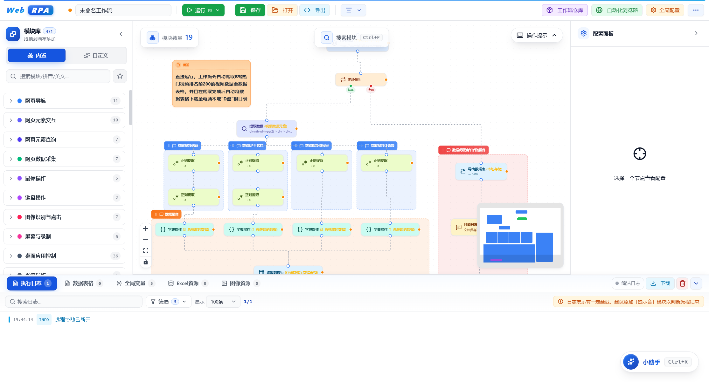
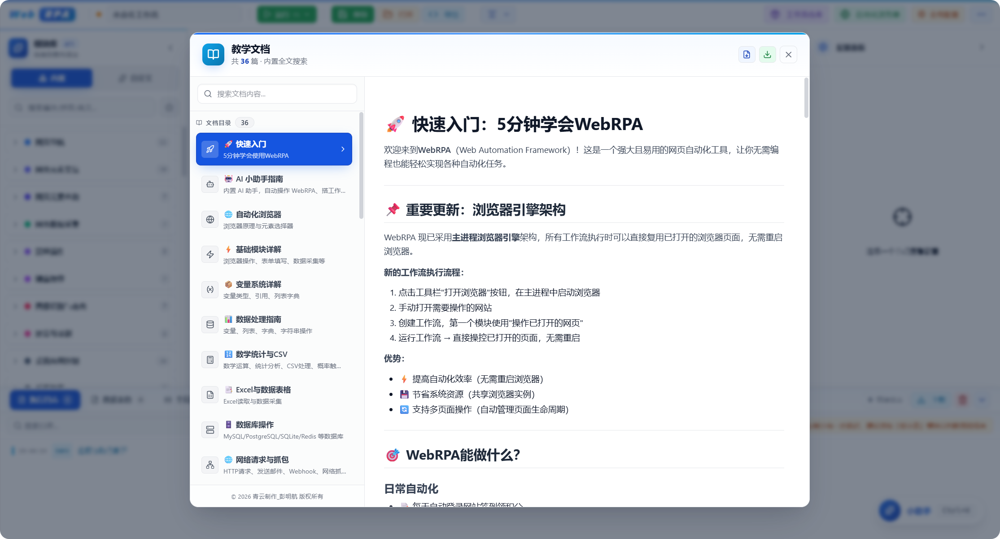
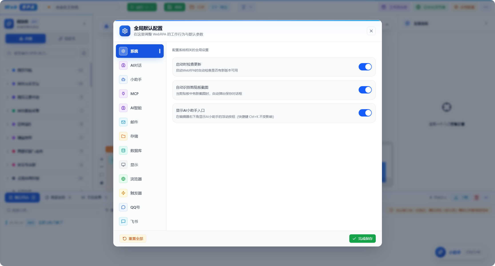
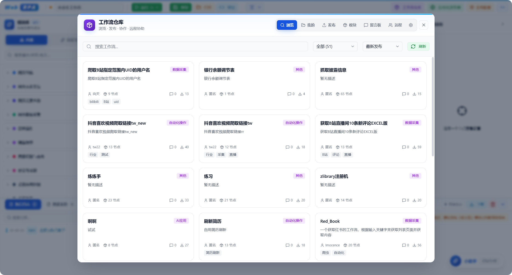
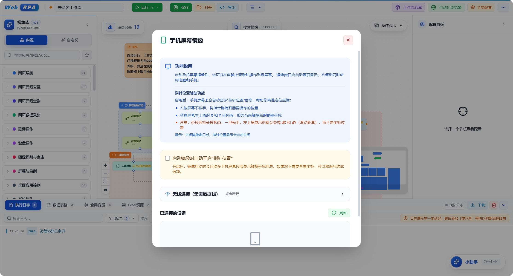
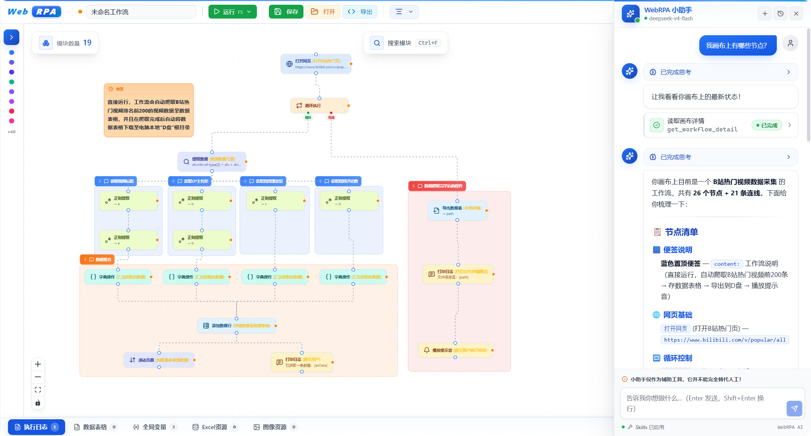
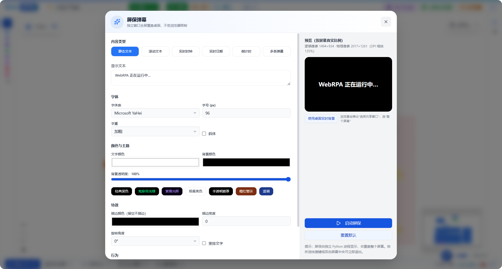
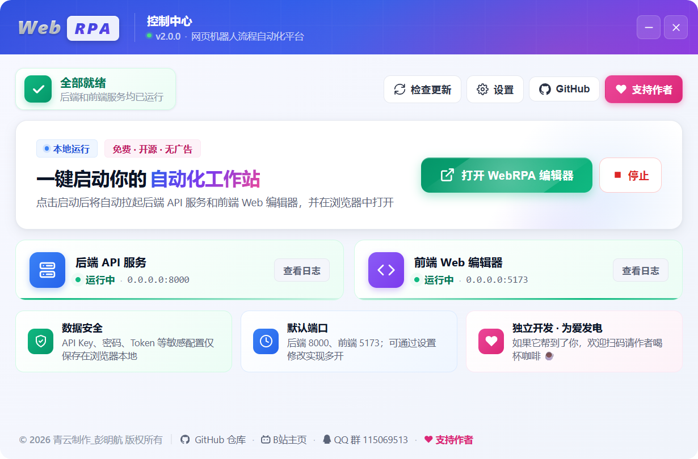

零代码可视化
拖拽模块、连线成流，所见即所得。不写一行代码，也能搭出复杂自动化逻辑。
WebRPA 是一款现代化可视化自动化工具。无需编写代码，拖拽 544 个内置模块即可构建工作流， 还内置了一个会自我修复的 AI 小助手，帮你搭建、排错、重跑。
以下均为 WebRPA 运行时的实际截图，每一处细节都为高效与美观而打磨。








从可视化编排到 AI 辅助，WebRPA 把复杂的自动化做成了拖拽这么简单。
拖拽模块、连线成流，所见即所得。不写一行代码，也能搭出复杂自动化逻辑。
对话式理解需求，自动搭建工作流；运行失败时自动诊断 → 修复 → 重跑，最多三轮。
网页、桌面、手机、Excel、数据库、AI、媒体、通知……覆盖 95% 自动化场景。
内置 Python 3.13 与 Node.js 运行环境，解压双击启动器即可运行，无需任何额外配置。
所有资源本地化，无需外网连接，天然支持内网与局域网部署，数据不出本机。
模块与文档支持中文、拼音、拼音首字母模糊搜索，几个字母就能定位想要的能力。
模块创建即内置默认变量，智能补全列表实时识别，引用变量再也不用记名字。
支持 Model Context Protocol 服务器接入，模块化架构可自定义开发，能力无限延伸。
内置 Mermaid 流程图，一键生成直观的工作流逻辑视图，复盘与分享都更轻松。
不只是聊天。它真的会动手帮你把工作流跑通。
.price-now 并重跑成功，采集到 128 条数据 ✓544 个模块按场景分门别类，拖进画布即可使用。
从侧边栏拖出模块到画布，连线定义执行顺序与条件分支，所见即所得。
在右侧面板填写选择器、变量与参数，支持变量引用与智能补全。
点击运行，实时查看日志与数据表格；出错可交给 AI 小助手自动修复。